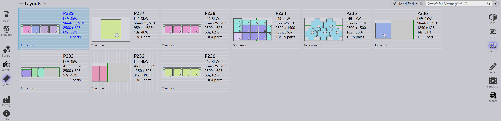

Vista lavori
Questa sezione spiega le diverse viste disponibili nella vista Lavori, inclusi Lavori, Pezzi, Nesting, Modifica, Simula ed Esporta.
Lavori
Selezionando l’opzione jobs viene visualizzato un elenco di tutti i lavori attualmente configurati nel software. È possibile fare doppio clic su un lavoro per visualizzarne i dettagli o fare clic con il pulsante destro del mouse per accedere a opzioni aggiuntive.
-
I lavori vengono visualizzati in vista riquadri, dove ogni lavoro viene visualizzato con le proprietà di base come ID lavoro, Rif. lavoro, Nome cliente, Pezzi totali, Data di scadenza, Barra di stato lavoro ecc.
-
Ogni riquadro del lavoro visualizza anche le immagini dei pezzi in formato scheda impilato. È possibile scorrere tutti i pezzi di un lavoro utilizzando la rotellina del mouse.

Dettagli lavoro
-
Facendo doppio clic su un riquadro o premendo il tasto Enter dopo aver selezionato un riquadro la vista passa alla modalità Dettagli.
-
La pagina dei dettagli visualizza l’elenco dei pezzi insieme ai fogli nidificati (layout), se presenti.
-
Utilizzare i tasti freccia Su/Giù per passare da un lavoro all’altro nella pagina dei dettagli.
-
Scorrendo la rotellina del mouse sulla pila di pezzi si evidenzia il pezzo sia nell' elenco dei pezzi che nei layout.
-
Selezionando un layout si evidenziano il layout e tutti i pezzi nidificati su di esso nell' elenco dei pezzi. Le evidenziazioni si disattivano automaticamente dopo un minuto.

-
Sintesi nesting:
-
Pezzi: Visualizza il numero totale di elementi dell’ordine e la quantità totale nel lavoro.
-
lamiere: Visualizza il numero totale di fogli nidificati insieme alla quantità totale di fogli.
-
-
Fasi operative:
-
Piegatura: Mostra la macchina assegnata e la quantità dell’ordine da elaborare.
-
Taglio: Mostra la macchina assegnata e la quantità dell’ordine da elaborare.
-
Priorità
-
Prima, fare clic sull’icona Jobs sul lato sinistro dello schermo, selezionare il lavoro che si desidera modificare, quindi fare clic su edit sul lato destro dello schermo (assicurarsi che l’opzione Lavori sia selezionata).
-
In alternativa, fare clic con il pulsante destro del mouse sul lavoro selezionato e fare clic sull’icona Verificare il documento per la modifica.
-
Quando si fa clic su edit, viene visualizzata la finestra di modifica del lavoro. In questa finestra è possibile impostare o modificare la priorità per il lavoro.

-
In base alla priorità del pezzo del lavoro, il riferimento del lavoro nel riquadro del lavoro viene ombreggiato di conseguenza.
-
I pezzi del lavoro vengono ordinati prima per priorità e poi per data di scadenza. Sono anche ombreggiati secondo la loro priorità.
-
Durante il nesting, i pezzi Urgent vengono considerati per primi, seguiti da High, poi Normal e infine i pezzi con priorità Low vengono posizionati nello spazio rimanente sui fogli di nesting.
-
I fogli di nesting vengono anche ordinati e ombreggiati secondo la priorità.
| Priorità lavoro | Descrizione colore |
|---|---|
|
Urgent |
|
Normal |
|
High |
|
Low |


Stato
-
La barra di stato del lavoro utilizza codici colore per indicare l’avanzamento o la condizione del lavoro in base alla quantità elaborata o rimanente.
-
I pezzi all’interno del lavoro e i fogli di nesting sono anche evidenziati con colori corrispondenti per riflettere il loro stato individuale all’interno del lavoro complessivo.
-
La codifica a colori migliora il monitoraggio e garantisce che gli operatori possano vedere facilmente lo stato della produzione a colpo d’occhio.


| Stato lavoro | Descrizione |
|---|---|
|
Non pronto |
|
Nesting |
|
Pronto |
|
Piegatura pianificata |
|
Lamiera mancante |
|
Coda di piegatura |
|
Coda di taglio |
|
Fine |


Pezzi
La vista Pezzi attivi visualizza tutti i pezzi attualmente in lavorazione all’interno dei lavori attivi.
Ogni pezzo è rappresentato come un riquadro che mostra i dettagli chiave come nome del pezzo, dimensioni, materiale, spessore, quantità e data di scadenza. Viene visualizzata anche un’anteprima visiva del pezzo.
Questa vista aiuta gli utenti a monitorare lo stato di elaborazione dei singoli pezzi e a tracciare i loro progressi nei lavori in corso.

Nesting
La vista Nesting attivi visualizza tutti i nesting attualmente in lavorazione all’interno dei lavori attivi.
Ogni nesting è rappresentato con dettagli rilevanti come numero di pezzi e stato di elaborazione. Viene visualizzato anche un layout visivo dei pezzi nidificati.
Questa vista aiuta gli utenti a monitorare l’avanzamento del nesting e a tracciare come i pezzi sono disposti ed elaborati sui fogli.

Modifica
L’opzione Modifica consente di modificare l’elemento selezionato.
In base alla vista corrente, l’istanza selezionata viene aperta per la modifica:
-
Nella vista Lavori, il lavoro selezionato viene aperto per la modifica.
-
Nella vista Pezzi attivi, il pezzo selezionato viene aperto per la modifica.
-
Nella vista Nesting attivi, il nesting selezionato viene aperto per la modifica.

Esporta csv
L’opzione Esporta consente di selezionare le informazioni sul lavoro ed esportarle in un file CSV.
-
Fare clic sull’icona jobs.
-
Fare clic sull’opzione export sul lato destro dello schermo.

-
Viene visualizzata una finestra di dialogo che mostra i campi disponibili:

-
Selezionare le caselle di controllo per i campi che si desidera esportare.
-
Utilizzare l’opzione Group By se si desidera raggruppare i dati per un campo selezionato.
-
Fare clic su Esporta per generare il file CSV.
Informazioni aggiuntive
Ci sono anche tre icone aggiuntive sul lato destro dello schermo che sono simulare, Goto e indietro.
-
Simula aprirà l’elemento selezionato per una vista più dettagliata.
-
Vai a cambierà il focus e il display sul pezzo o il nesting che è selezionato.
-
Indietro tornerà indietro di un livello da dove ci si trova attualmente, ad esempio facendo clic su indietro mentre si è in simulazione si tornerà al lavoro principale e da un lavoro si tornerà alla visualizzazione principale dei lavori.